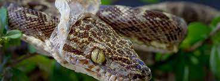

İlanlar elastik çənə quruluşuna sahibdir. Bununla da böyük canlıları uda bilirlər.
İlanların çoxu zəhərsizdir. Zəhərsiz ilan növləri ovlarına dolanaraq onları boğur.
İlanların zəhərli növləri isə zahardan ovlanmaq, yaxud özlərini qorumaq məqsədi ilə
istifadə edirlər. İlanlar həşərat, qurbağa, quş, balıq, kartankala, siçan, yumurta və s
ilə qidalanır. İlanları
öyrənən elm serpantologiya adlanır.
Dəri
İlan dərisi pulcuqlarla örtülüdür, hamar və quru quruluşa malikdir. İlanların qarın və bel
pulcuqlarının quruluşu fərqlidir. Dəri rəngləri çox müxtəlidir. Bəziləri bir rəngə, bəziləri
isə 3–4 rəngə sahibdir. Rəngli ilanlar, əsasən, zəhərlidir. Ancaq zəhərli olmayan rəngli ilanlar
da var. Rəngli dəri təhlükəni bildirir və düşmənləri qorxutmaq üçün istifadə olunur, amma bu o
demək deyil ki, birrəngli ilanların dəriləri qorunmaq üçün əlverişsizdir. Birrəngli ilanların
rəngi daha çox bozumtul, qəhvəyi və qara rəngli olur ki, bu rənglər də torpaqda, qumda, daşda
gizlənmək üçün (kamuflyaj) ideal rənglərdir.
Dəri dəyişmə
Bir çox canlılar kimi ilanlar da dəri dəyişdirir. Köhnə əri ağı tərəfdən çırır, ilan daş, ağac
kimi obyektlərə sürtünərək dərisini çıxardır. Bu prosesin bir neçə funksiyası var. İlk növbədə
ilan köhnə dəridən azad olur, həm də parazitlərdən təmizlənir

Zəhər
Zəhər başın arxasındakı zəhər vəzilərində toplanır və dişlər vasitəsilə ova, yaxud
düşmənə yeridilir. Tüpürən kobra kimi bir neçə ilan təhlükə hiss etdikdə düşmənin gözünə zəhər tüpürür.
Bəzi heyvanlarda ilan zəhərinə qarşı təbii peyvənd vardır və zəhər onlara təsir etmir.